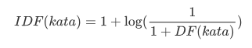
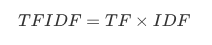
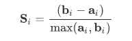

Simple Web Crawler
Program ini digunakan untuk mengekstrak data dari sebuah website. Untuk source code lengkap, sila klik di sini.
Pengantar
Ucapan terima kasih kepada Bapak Mulaab, S.Si., M.Kom. selaku Dosen Pembimbing kami
Nama : Ibnu Asro Putra
NRP : 160411100023
Mata kuliah : Penambangan dan Pencarian Web - 2019
Jurusan : Teknik Informatika
Perguruan Tinggi : Universitas Trunojoyo Madura
Environment
Program ini dijalankan menggunakan:
- Bahasa Python, dengan library:
- BeautifulSoup4 (install menggunakan pip)
- requests (install menggunakan pip)
- SQLite3 (library bawaan python)
- csv (library bawaan python)
- numpy (install menggunakan pip)
- scipy (install menggunakan pip)
- scikit-learn (install menggunakan pip, perlu untuk install numpy dan scipy terlebih dulu)
- Scikit-fuzzy (install menggunakan pip, perlu untuk install numpy dan scipy terlebih dulu)
- Website target : Jurnal Online)
Jika anda memutuskan untuk meng-update data, maka Program hanya bisa dijalankan menggunakan Internet, atau program akan error
Setiap kali program dijalankan, akan muncul file baru bernama
test.db, dan beberapa filecsv. File tersebut merupakan file database serta output program.
Teori dan Penjelasan Program
Crawling
Crawling merupakan sebuah kegiatan untuk mendapatkan sekelompok data dari web. Data-data tersebut bisa sangat bervariasi, seperti text, citra, audio, video dan lain sebagainya. Dalam program ini, kita akan melakukan crawling pada text, atau lebih dikenal dengan text Mining.
Berikut code untuk melakukan Crawling:
def crawl(src):
global c
page = requests.get(src)
# Mengubah html ke object beautiful soup
soup = BeautifulSoup(page.content, 'html.parser')
# Find all item
items = soup.findAll(class_='article-item')
#print ('Proses : %.2f' %((c/maxPage)*100) + '%'); c+=1
for item in items:
judul = item.find(class_='title-article').getText()
authors = item.find(class_="author-article").findAll(class_='title-author')
author = ''
for i in authors: author = author+i.getText()+'; '
abstrack = item.find(class_='article-abstract').find('p').getText()
#pengecekan data redundant
cursor = conn.execute('select * from jurnal2 where judul=?', (judul,))
cursor = cursor.fetchall()
if (len(cursor) == 0):
conn.execute("INSERT INTO jurnal2 \
VALUES (?, ?, ?, ?)", (judul, author, abstrack, kategori));
Perlu diingat bahwa, setiap web memiliki struktur html yang berbeda, maka jika kalian mengubah url web, maka perlu dilakukan penyesuaian pada code.
Selanjutnya, mari kita bahas lebih detail lagi. Untuk mendapatkan tag html .yang diinginkan BeautifulSoup menyediakan 2 fungsi, yaitu :
- soup.find(parameter)
digunakan untuk mendapatkan satu tag html yang muncul pertama kali. Hasilnya berupa objek soup
- soup.findAll(parameter)
digunakan untuk mendapatkan semua tag html tersebut. Hasilnya berupa list
Sementara itu, untuk parameternya memiliki 3 macam. Kalian bisa mencari berdasarkan:
- tag html (seperti
<p>,<div>,h1dsb).
contoh:
code html <div><p>aku makan sayur</p></div>
maka, untuk mendapatkan tag p adalah : soup.find("p")
- class
code html <div><p class='makan'>aku makan sayur</p></div>
maka, untuk mendapatkan tag p adalah : soup.find(class_='makan')
- id
code html <div><p id='sayur'>aku makan sayur</p></div>
maka, untuk mendapatkan tag p adalah : soup.find(id='sayur')
Lalu, untuk mendapatkan textnya, digunakan .getText() pada objek BeautifulSoup.
Setelah kalian paham tentang bagaimana menggunakan library beautifulsoup, kita akan membahas bagaimana code di atas bekerja.
items = soup.findAll(class_='article-item')
Hal pertama yang kita lakukan adalah menentukan apa saja yang akan kita ambil. Pada kasus jurnal online ini, kita hanya akan mengambil judul, penulis, beserta abstraknya saja. Untuk itu, di sini kita mengambil semua paper, yang bisa kita lihat berada di class 'article-item'.
for item in items:
judul = item.find(class_='title-article').getText()
authors = item.find(class_="author-article").findAll(class_='title-author')
author = ''
for i in authors: author = author+i.getText()+'; '
abstrack = item.find(class_='article-abstract').find('p').getText()
Kemudian, untuk setiap paper, kita ambil judul (dengan class 'title-article'), penulis (dengan class 'author-article'), dan abstrak (dengan class 'article-abstract', lantas dicari tag p).
#pengecekan data redundant
cursor = conn.execute('select * from jurnal2 where judul=?', (judul,))
cursor = cursor.fetchall()
if (len(cursor) == 0):
conn.execute("INSERT INTO jurnal2 \
VALUES (?, ?, ?, ?)", (judul, author, abstrack, kategori));
Kemudian, memasukkan ke dalam database. Sebelum itu, perlu dilakukan pengecekan apakah ada data yang sama. Karena hal itu bisa mengganggu hasil akhir nanti.
Text-Extraction
Pada tahap ini, text yang diambil akan dilakukan ekstraksi teks. Terdapat beberapa tahapan, yaitu:
- Stopword Removal,
yaitu menghilangkan kata-kata dan tanda baca yang tidak penting, seperti "dan", "atau", "di", dsb.
- Stemming
yaitu mengubah suatu kata menjadi kata dasar, seperti kata "menggunakan" menjadi "guna", "memakan" menajadi "makan".
- Tokenisasi (n-gram)
yaitu memecah kalimat per kata, seperti "aku makan sayur", menjadi "aku", "makan", "sayur". Dalam tokenisasi ini, terdapat variasi jumlah kata yang dipecah. Misal dipecah menjadi 2 suku kata, seperti "aku makan sayur bayam", menjadi "aku makan", "makan sayur", "sayur bayam". Hal tersebut lebih dikenal sebagai n-gram
Ketiga tahapan di atas sudah saya pecah menjadi dua method berbeda seperti pada code di bawah.
def preprosesing(txt):
SWfactory = StopWordRemoverFactory()
stopword = SWfactory.create_stop_word_remover()
Sfactory = StemmerFactory()
stemmer = Sfactory.create_stemmer()
hasil = ''
for i in txt.split():
if i.isalpha():
# Menghilangkan Kata tidak penting
stop = stopword.remove(i)
stem = stemmer.stem(stop)
hasil += stem + ' '
return hasil
#VSM
def tokenisasi(txt, ngram=1):
token = []
start=0
end=ngram
txtSplit = txt.split()
while end <= len(txtSplit):
tmp = txtSplit[start:end]
frase = ''
for i in tmp:
frase += i+ ' '
token.append(frase)
end+=1; start +=1;
return token
Setelah ketiganya dilakukan, maka akan kita bisa membuat sebuah Vector Space Model, dengan menggunakan metode Bag of Words dan TF-IDF.
Metode Bag of Words
Bag of Words merupakan salah satu metode untuk membuat sebuah Vector Space Model (VSM) dengan cara menghitung setiap kata pada setiap dokumen. Contohnya seperti ini
doc 1 : "Topi saya bundar"
doc 2 : "Bundar topi saya. Kalau tidak bundar, bukan topi saya"
Kita akan menghitung setiap kata tersebut. Maka didapat VSM sebagai berikut:
| No Doc | Topi | Saya | Bundar | Kalau | Tidak | Bukan |
|---|---|---|---|---|---|---|
| 1 | 1 | 1 | 1 | 0 | 0 | 0 |
| 2 | 2 | 2 | 2 | 1 | 1 | 1 |
Code untuk melakukan perhitungan tersebut adalah sebagai berikut
def countWord(txt, ngram=1):
'''
Fungsi ini digunakan untuk menghitung setiap kata pada satu string
'''
d = dict()
token = tokenisasi(txt, ngram)
for i in token:
if d.get(i) == None:
d[i] = txt.count(i)
return d
def add_row_VSM(d):
'''
Fungsi ini digunakan untuk membangun VSM
'''
#init baris baru
VSM.append([])
# memasukkan kata berdasarkan kata yang telah ditemukan sebelumnya
for i in VSM[0]:
if d.get(i) == None:
VSM[-1].append(0)
else :
VSM[-1].append(d.pop(i));
# memasukkan kata baru
for i in d:
VSM[0].append(i) #fitur baru
for j in range(1, len(VSM)-1):
#VSM[j].insert(-2,0)
VSM[j].append(0)
VSM[-1].append(d.get(i))
Method counWord digunakan untuk menghitung banyaknya kata pada dokumen. Sementara method add_row_VSM digunakan untuk membuat sebuah matrix VSM tersebut.
Proses pemanggilan fungsi-fungsi di atas dilakukan oleh code di bawah ini:
cursor = conn.execute("SELECT * from jurnal2")
cursor = cursor.fetchall()
cursor = cursor[:60]
pertama = True
corpus = list()
label = list()
c=1
n = int(input("ngram : "))
#n=1
for row in cursor:
print ('Proses : %.2f' %((c/len(cursor))*100) + '%'); c+=1
label.append(row[-1])
txt = row[-2]
cleaned = preprosesing(txt)
cleaned = cleaned[:-1]
corpus.append(cleaned)
d = countWord(cleaned, n)
if pertama:
pertama = False
VSM = list((list(), list()))
for key in d:
VSM[0].append(key)
VSM[1].append(d[key])
else:
add_row_VSM(d)
Lalu untuk menampilkan hasilnya (agar terlihat rapi) maka kita export ke csv. Serta kita pisahkan antara kata-kata dengan nilainya:
write_csv("bow_manual_%d.csv"%n, VSM)
feature_name = VSM[0]
bow = np.array(VSM[1:])
TF-IDF
Selain menggunakan Bag of Words, kita juga bisa menggunakan metode TF-IDF. Hal ini karena Bag of Word memiliki kelemahan tersendiri.
TF-IDF sendiri merupakan kepanjangan dari Term Frequence (frekuensi Kata) dan Invers Document Frequence (invers frekuensi Dokumen). Rumus TF-IDF sendiri terbilang mudah karena hanya TFxIDF.
Kita telah mencari TF sebelumnya (yaitu Bag of Words), karena konsep keduanya yang memang sama. Sekarang kita tinggal mencari nilai IDF.
Untuk mendapatkan IDF, pertama kita perlu mencari DF (frekuensi Dokumen). Misalnya:
doc1 : Topi Saya Bundar, bundar topi saya
doc2 : Matahari itu terlihat bundar
Maka, bisa kita ketahui:
| Kata | Jumlah Dokumen yang memiliki kata tersebut (DF) |
|---|---|
| Topi | 1 |
| Saya | 1 |
| Bundar | 2 |
| Matahari | 1 |
| itu | 1 |
| terlihat | 1 |
Setelah itu, kita lakukan invers pada setiap kata:

Setelah ketemu, maka tinggal kita kalikan TFxIDF. Berikut code programnya:

df = list()
total_doc = bow.shape[0]
for kolom in range(len(bow[0])):
total = 0
for baris in range(len(bow)):
if (bow[baris, kolom] > 0):
total +=1
df.append(total)
df = np.array(df)
idf = list()
for i in df:
tmp = 1 + log10(total_doc/(1+i))
idf.append(tmp)
idf = np.array(idf)
tfidf = bow * idf
Preprocessing
Tahap preprocessing merupakan tahap mengolah data agar data lebih mudah diproses. Ada banyak jenis dari preprocessing. Namun, di kesempatan kali ini kita hanya akan membahas tentang seleksi fitur.
Seleksi Fitur
Seleksi fitur merupakan salah satu cara untuk mengurangi dimensi fitur yang sangat banyak. Seperti pada kasus kita, Text Mining, jumlah fitur yang didapatkan bisa mencapai lebih dari 2000 kata yang berbeda. Namun, tidak semua kata tersebut benar-benar berpengaruh pada hasil akhir nantinya.
Selain itu, kita tahu bahwa semakin banyak data yang diproses, maka lebih banyak biaya dan waktu yang digunakan untuk memprosesnya. Oleh karena itu, kita perlu melakukan pengurangan fitur tanpa mengurangi kualitas hasil akhir, misalnya dengan Seleksi Fitur.
Pada dasarnya, seleksi fitur memiliki 3 tipe umum:
- Wrap
- Filter
- Embed
Selain itu, Seleksi Fitur juga memiliki banyak sekali metode-metode, seperti Information Gain, Chi Square, Pearson, dll.
Pearson Correlation
Pendekatan Pearson merupakan pendekatan paling sederhana. Pada pendekatan ini, setiap fitur akan dihitung korelasinya. Semakin tinggi nilainya, maka fitur tersebut semakin kuat korelasinya. Lalu fitur yang memiliki korelasi tinggi akan dibuang salah satunya.
Pendekatan ini digunakan untuk data tipe numerik.
Codenya sebagai berikut:
def pearsonCalculate(data, u,v):
"i, j is an index"
atas=0; bawah_kiri=0; bawah_kanan = 0
for k in range(len(data)):
atas += (data[k,u] - meanFitur[u]) * (data[k,v] - meanFitur[v])
bawah_kiri += (data[k,u] - meanFitur[u])**2
bawah_kanan += (data[k,v] - meanFitur[v])**2
bawah_kiri = bawah_kiri ** 0.5
bawah_kanan = bawah_kanan ** 0.5
return atas/(bawah_kiri * bawah_kanan)
def meanF(data):
meanFitur=[]
for i in range(len(data[0])):
meanFitur.append(sum(data[:,i])/len(data))
return np.array(meanFitur)
def seleksiFiturPearson(data, threshold):
global meanFitur
meanFitur = meanF(data)
u=0
while u < len(data[0]):
dataBaru=data[:, :u+1]
meanBaru=meanFitur[:u+1]
v = u
while v < len(data[0]):
if u != v:
value = pearsonCalculate(data, u,v)
if value < threshold:
dataBaru = np.hstack((dataBaru, data[:, v].reshape(data.shape[0],1)))
meanBaru = np.hstack((meanBaru, meanFitur[v]))
v+=1
data = dataBaru
meanFitur=meanBaru
if u%50 == 0 : print(u, data.shape)
u+=1
return data
Chi Square
Sama seperti pendekatan pearson, hanya saja, pendekatan ini lebih digunakan untuk data tipe categorical.
Procesing
Terdapat dua hal yang bisa kita lakukan pada sebuah data.
- Clustering (pengelompokan)
- Klasifikasi (fokus pada hasil prediksi)
Clustering
Clustering merupakan pengelompokan data menjadi k-kelompok (dengan k merupakan banyak kelompok). Pengelompkan tersebut berdasarkan ciri yang mirip. Pada kasus ini, maka ciri yang mirip bisa diketahui dari kata yang menjadi ciri dari setiap dokumen.
Metode Clustering sendiri ada banyak. Salah duanya adalah K-Means Clustering dan Fuzzy C-Means Clustering.
Setelah dilakukan proses Clustering, perlu kita cari nilai Silhouette Coefficient untuk melihat apakah hasil cluster tersebut sudah bagus atau tidak.
K-Means
# Clustering
kmeans = KMeans(n_clusters=5, random_state=0).fit(tfidf_matrix.todense())
for i in range(len(kmeans.labels_)):
print("Doc %d =>> cluster %d" %(i+1, kmeans.labels_[i]))
Code di atas adalah code untuk melakukan clustering. Pada contoh ini cluster dibagi menjadi 5. Banyak cluster bisa diubah sesuai kebutuhan.
Fuzzy C-Means
cntr, u, u0, distant, fObj, iterasi, fpc = fuzz.cmeans(tfidf.T, 3, 2, 0.00001, 1000)
membership = np.argmax(u, axis=0)
parameter dari fuzzy c-means berturut-turut : data, jumlahCluster, pembobot, erorMaksimal, serta IterasiMaksimal.
Shilhouette Coefisient
Shilhouette Coefisient merupakan salah satu metode evaluasi yang digunakan untuk model Cluster, seperti K-Means atau Fuzzy C-Means. Metode ini berfungsi untuk menguji kualitas dari cluster yang dihasilkan. Untuk menghitung nilai silhoutte coefisient diperlukan jarak antar dokumen dengan menggunakan rumus EuclideanDistance. Setelah itu tahapan untuk menghitung nilai silhoutte coeffisien adalah sebagai berikut :
-
Untuk setiap objek i, hitung rata-rata jarak dari objek i dengan seluruh objek yang berada dalam satu cluster. Akan didapatkan nilai rata-rata yang disebut ai.
-
Untuk setiap objek i, hitung rata-rata jarak dari objek i dengan objek yang berada di cluster lainnya. Dari semua jarak rata-rata tersebut ambil nilai yang paling kecil. Nilai ini disebut bi.
-
Setelah itu maka untuk objek i memiliki nilai silhoutte coefisien :

Hasil perhitungan nilai silhoutte coeffisien dapat bervariasi antara -1 hingga 1. Hasil clustering dikatakan baik jikai nilai silhoutte coeffisien bernilai positif. Maka dapat dikatakan, jika si = 1 berarti objek i sudah berada dalam cluster yang tepat. Jika nilai si = 0 maka objek i berada di antara dua cluster sehingga objek tersebut tidak jelas harus dimasukan ke dalam cluster A atau cluster B. Akan tetapi, jika si = -1 artinya struktur cluster yang dihasilkan overlapping, sehingga objek i lebih tepat dimasukan ke dalam cluster yang lain.
Nilai rata-rata silhoutte coeffisien dari tiap objek dalam suatu cluster adalah suatu ukuran yang menunjukan seberapa ketat data dikelompokan dalam cluster tersebut.
Analisis
Data yang digunakan merupakan data dari Jurnal Online berupa paper dari 9 jurnal berbeda, dengan masing-masing jurnal didapat 10 paper. Total data yang digunakan sebanyak 90 judul dan abstrak.
Pada percobaan ini digunakan model Fuzzy C-Means, dengan percobaan cluster dilakukan berulang kali dengan mengubah nilai parameter, yaitu Threshold untuk Seleksi Fitur, Jumlah Cluster, serta banyak N-gram. Maka dihasilkan nilai Shilhouette Coeffisient sebagai Berikut:
Tanpa dilakukan preprocessing
Pada percobaan ini, data tidak dilakukan Seleksi Fitur apapun. Data langsung dibuat model Cluster menggunakan Fuzzy C-Means. Percobaan dilakukan beberapa kali dengan mengubah jumlah Cluster, dengan rentang 2-5.
| Jumlah Cluster | Shilhouette Coeffisien |
|---|---|
| 2 | 0.325 |
| 3 | 0.325 |
| 4 | 0.325 |
| 5 | 0.325 |
Dari hasil di atas, dapat disimpulkan, apabila tidak dilakukan tahap Seleksi Fitur, banyak cluster tidak berpengaruh pada hasil cluster tersebut.
Berdasarkan Jumlah Cluster
Jumlah Cluster berpengaruh dalam menentukan sebanyak apa kelompok yang akan dibuat. Hal ini diharapkan kita bisa menentukan Jumlah Cluster yang paling tepat dalam menentukan model untuk kasus ini.
Pada percobaan ini, nilai Threshold pada seleksi Fitur Pearson sebesar 0.8. Percobaan dilakukan sebanyak 9 kali, dengan mengubah parameter c pada C-Means dengan rentang 2-5. Hasilnya sebagai berikut:
| Jumlah Cluster | Shilhouette Coeffisient |
|---|---|
| 2 | 0.199 |
| 3 | 0.057 |
| 4 | 0.093 |
| 5 | 0.050 |
Dari sini bisa kita melihat bahwa jumlah cluster 2 memiliki nilai coefisien tertinggi dengan nilai Shilhouette 0.199. Sebaliknya, cluster yang paling tidak tepat, apabila jumlah cluster sebanyak 5 dengan nilai shilhouette 0.050.
Berdasarkan nilai Threshold
Nilai Threshold berfungsi untuk menentukan seberapa banyak fitur-fitur yang akan dihapus. Dengan dilakukan percobaan ini, diharapkan bisa menentukan nilai Threshold yang paling cocok.
Nilai Threshold yang digunakan merupakan {0.9, 0.85, 0.8, 0.75, 0.7}. Melihat Percobaan sebelumnya, Jumlah Cluster yang paling baik merupakan 2, maka, digunakan C=2. Hasilnya didapatkan :
| Nilai Threshold | Shilhouette Coeffisient |
|---|---|
| 0.9 | 0.334 |
| 0.85 | 0.342 |
| 0.8 | 0.199 |
| 0.75 | 0.255 |
| 0.7 | 0.282 |
Nilai Shilhouette paling tinggi didapat ketika nilai Threshold 0.85, yaitu 0.342. Selanjutnya, secara berturut-turut, 0.9, 0.7, 0.75, dan nilai terendah 0.8, yaitu 0.199.
Berdasarkan N-Gram
N-Gram berfungsi untuk menentukan banyaknya kata per tokenisasi. Hal ini diharapkan untuk mengetahui N-gram terbaik.
Pada percobaan ini, digunakan jumlah cluster sebanyak 2. Percobaan dilakukan sebanyak 3 kali dengan mengubah parameter "n" pada N-gram. Maka didapat:
| n-gram | Shilhouette Coeffisient |
|---|---|
| 1 | 0.325 |
| 2 | 0.176 |
| 3 | 0.205 |
Dari hasil di atas, didapat nilai shilhouette tertinggi dengan n-gram 1, yaitu 0.325. Sementara paling rendah adalah 0.176, apabila nilai n-gram adalah 2.
Selain itu, apabila dilakukan seleksi fitur, ngram > 1 akan menghasilkan 1 cluster, tidak peduli berapapun jumlah cluster yg ditentukan.
K-Means
Karena nilai Shilhouette yang relatif kecil, hasil dari Fuzzy C-Means akan dibandingkan dengan metode lain, yaitu K-Means, untuk melihat manakah yang lebih baik.
Parameter yang digunakan di antaranya, Jumlah Cluster = 2, Threshold = 0.85, dan N-Gram = 1. Maka, diperoleh hasil berikut:
| Metode | Shilhouette Coefisient |
|---|---|
| Fuzzy C-Means | 0.342 |
| K-Means | 0.430 |
Kesimpulan
Dari hasil percobaan di atas, dapat disimpulkan bahwa metode yang terbaik adalah K-Means, dengan parameter, n-gram=1, jumlah cluster=2, dan nilai Treshold=0.85.